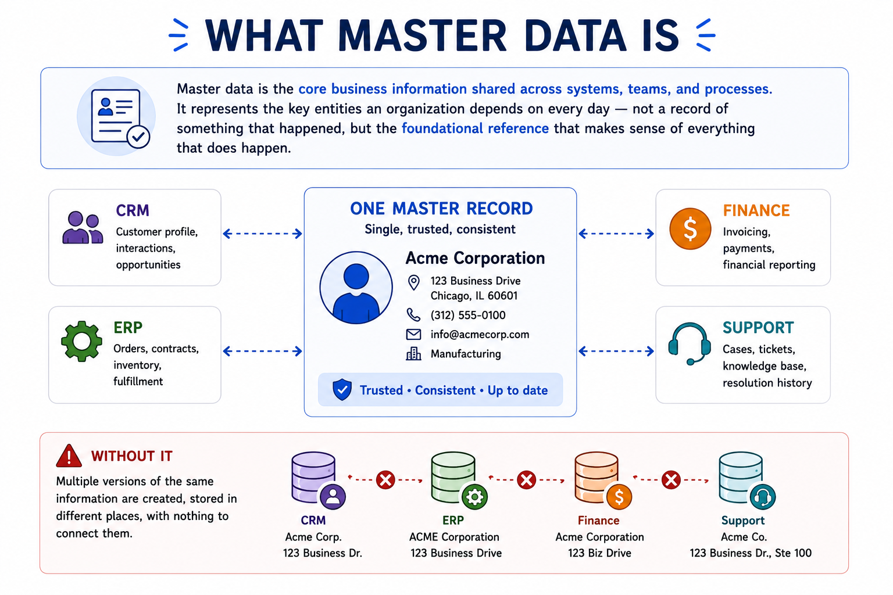
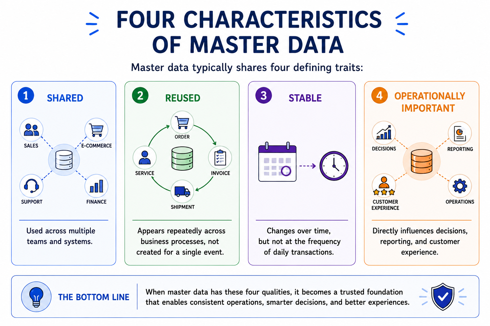
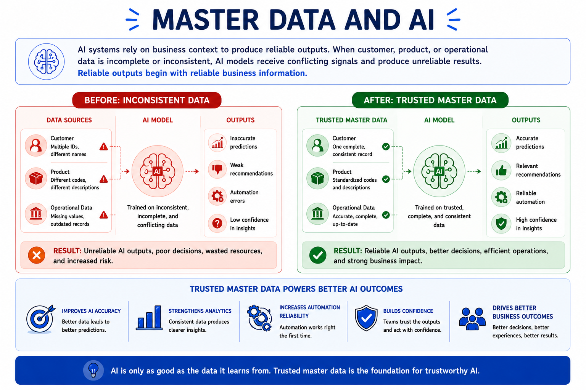

What Is Master Data
Module support notes
Master data is one of the most fundamental concepts in enterprise data management. It provides the common business foundation that organizations depend on to operate, make decisions, and keep systems aligned.
Definition
Master data is the core business information shared across systems, teams, and processes — the key entities an organization depends on every day, not a record of something that happened, but the foundational reference that makes sense of everything that does.
What master data looks like in practice
The most common examples include customers, products, suppliers, employees, and locations. These records are not owned by one department — a customer record may appear in CRM, sales, finance, support, and reporting, with every system depending on the same underlying information to do its job.

Four characteristics of master data
Not all business data is master data. What sets it apart is a consistent set of qualities that make it foundational rather than transactional.

Master data and AI
As organizations adopt AI and automation, the quality of master data becomes even more critical. AI systems rely on business context to produce reliable outputs — and that context comes from master data. When it is inconsistent or incomplete, AI models receive conflicting signals and produce results that cannot be trusted.
